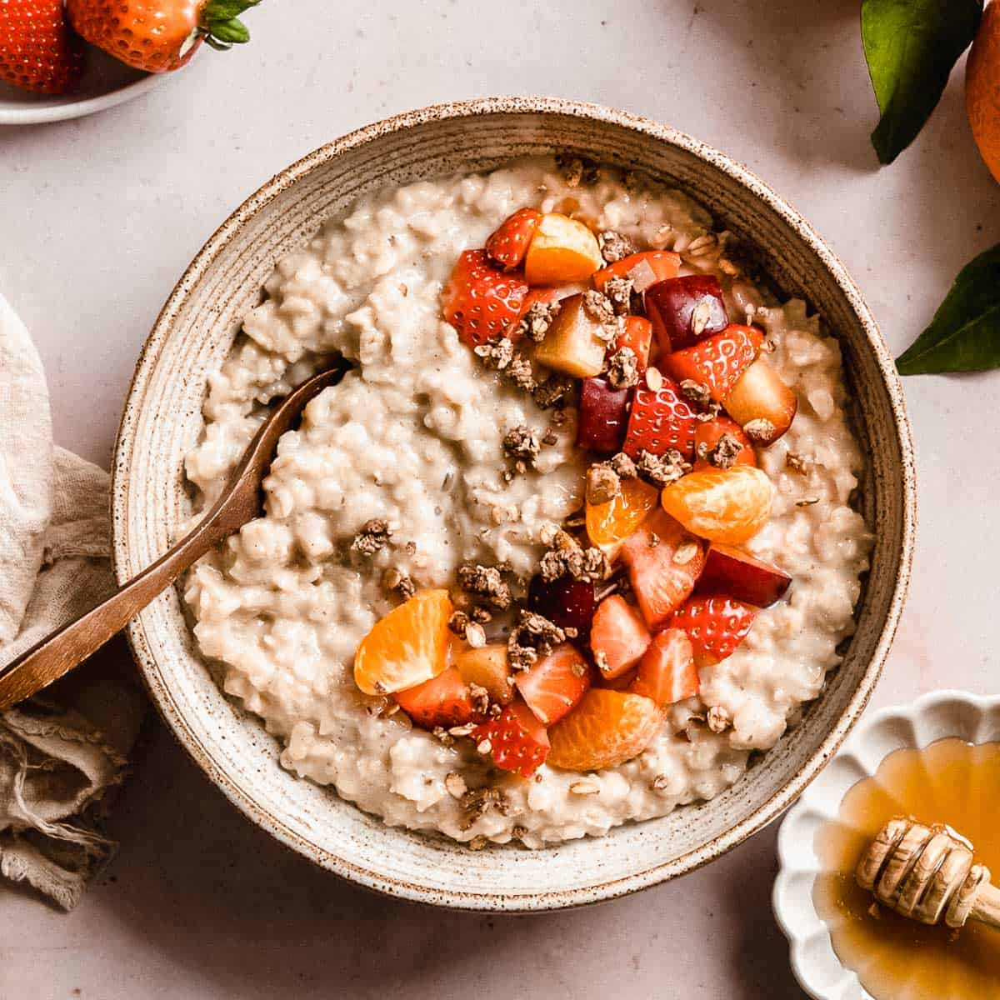

Milk with Oats and Honey

Description
Milk with oats and honey is a simple, nutritious, and comforting breakfast that provides energy to start the day. This dish is rich in fiber, protein, and natural sweetness, making it a perfect choice for a healthy and filling meal. The combination of warm milk, soft oats, and sweet honey creates a creamy texture and a delicious taste that is both satisfying and easy to digest.
This breakfast can be customized with different toppings like fresh fruits, nuts, or cinnamon for extra flavor and nutrition. It is quick to prepare, making it ideal for busy mornings. Whether enjoyed hot in winter or cold in summer, milk with oats and honey is a classic and wholesome way to fuel your body for the day ahead.
Ingredients
- 1 cup of milk (regular or plant-based)
- ½ cup of rolled oats/li>
- 1 tablespoon of honey
- A pinch of cinnamon (optional)
- Fresh fruits or nuts for topping (optional)
Instructions
- Heat the milk: In a small pot, heat the milk over medium heat until warm but not boiling.
- Cook the oats: Add the rolled oats to the milk and stir well. Let them cook for about 5 minutes, stirring occasionally, until they soften and absorb the milk.
- Sweeten the mixture: Remove from heat and stir in the honey. Add a pinch of cinnamon if desired.
-
- Serve and enjoy: Pour into a bowl and top with fresh fruits or nuts for extra flavor and texture. Serve warm and enjoy a nutritious breakfast!
This creamy and delicious breakfast is a perfect way to start your day with warmth and energy. Enjoy! 😊
Back to Recipes